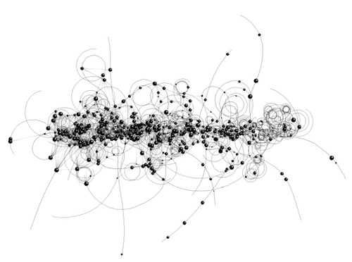
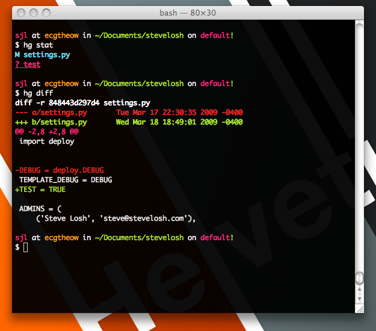
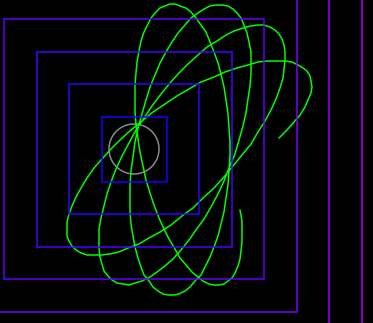
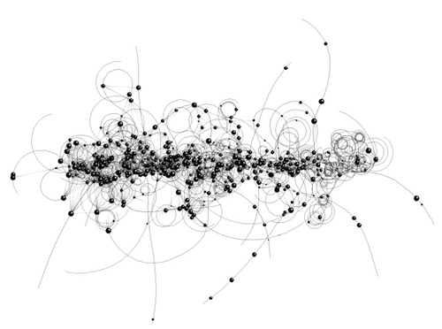
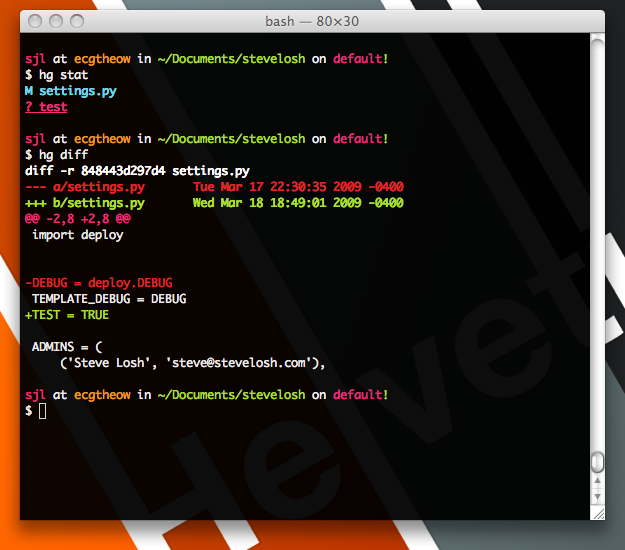
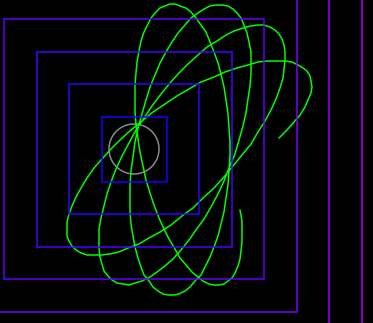
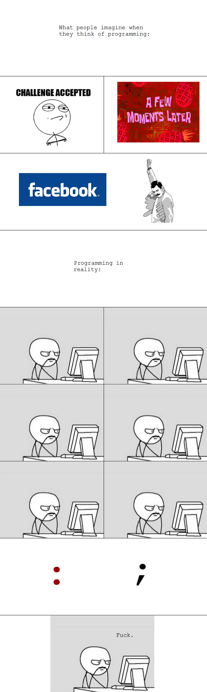
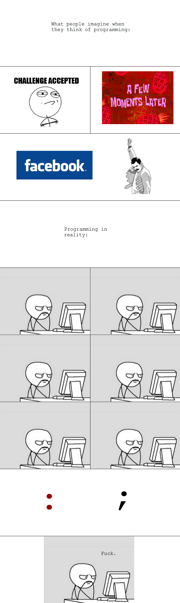

Table of Contents
Programming
- “Defect driven development” – Kelly C. (as opposed to Test-Driven Development)
> “If you find a bug <especially when you aren't working hard at it>, it means your bug-finding process is broken <and there's probably a bunch more you haven't found yet>.” –Philip Koopman
- It's good to separate code into logical chunks of files (and functions too). Much easier to find later on…
- Better graph layout software is GraphViz, as it's command line and figures out most things for you. Good diagram software, yEd
- I learned programming by taking baby steps. This is a great article on that and project euler. http://www.theatlantic.com/technology/archive/2011/06/how-i-failed-failed-and-finally-succeeded-at-learning-how-to-code/239855/
- I want to learn how to organize my code well, particularly for recursion and stopping while recursing. Use it for finding the median in a binary search tree for RunningSorted and RunningMax/Min (can't I just do heap?) algorithms.
- 15-251 at CMU is similar to 6.042 at MIT. It'd be nice to do it someday… and cache the site.
- Use iMac at home for compute power, but if you want more, Google Compute Engine and Amazon's EC2 are pretty reasonable for temporary compute spurts too!
Why Johnny Won't Upgrade
Nice article on all the reasons users don't understandably want to upgrade. https://jacquesmattheij.com/why-johnny-wont-upgrade/
Duplicate code
PMD Duplicate code detector (run the gui executable)
Whole project
Really great set of guidelines from USDS: https://playbook.cio.gov/
Visual Studio
To launch a VS console, type in “native”? Or “vs”
Whitespace
We used uncrustify in ME team.
Offline
Offline documentation, Zeal: https://zealdocs.org/
Bugs
Polling vs Interrupt
Had an interesting conversation with Maciej today about whether to use polling or interrupts. I remember in 18-649 he said to use polling to guarantee handling of all message. However, when you want to guarantee a super-high priority thing but can't afford to poll it every 1ms, it should be good enough to do a joint thing. Do interrupt for small set of high priority commands, but make sure they can't be repeatedly sent over each other.
- Maciej had case in poland where a jumper asserted a “processor hot” signal, but there wasn't bounce protection on it so that it interrupted thousands of times per second, preventing the original interrupt from finishing because they forgot to turn off interrupts in the interrupt handling routine!
Concurrency
TLA+
Another TLA+ introduction (2018): https://learntla.com/introduction/, https://news.ycombinator.com/item?id=19661329
(from Hacker News comments) 1, 2
- Intel uses HOL Light but one guy / team for cache coherency used TLA+ http://research.microsoft.com/en-us/um/people/lamport/pubs/high-level.pdf
- Lamports' website has all the details,
- Has ability to check liveness and fairness and reliability properties and enforce them through the model checking
- Apparently lacks ability to spawn threads.
- Does all verification by brute force (probably with some smarts), but for best performance write declaratively and not procedural.
- “Classic” paper Time, Clocks, and the Ordering of Events in a Distributed System, but doesn't contain any TLA+ code. Just math

= Getting it running = One guy on Ubuntu just used the tla2tools jar only. Didn't really use the IDE. http://www.aloshbennett.in/weblog/2014/tla/tla-on-ubuntu/
18-649 Elevator Project
// CAN bus timings
HallButtonControl: 100ms
CarButtonControl: 100ms
LanternControl: 200ms
CarPositionControl: 50ms
Dispatcher: 50ms
DoorControl: 10ms
DriveControl: 10ms
(from 18-649 lab 7 http://www.ece.cmu.edu/~ece649/project/proj7/index.html)
- We had a race condition where DoorControl was checked before DriveControl and the Drive ignored the intention of the Door and just looked at the position of the door. So the HallButtonControl, if pressed at the exact right time, would cause the Door to start opening while the Drive was starting to move. I'm wondering if TLA+ will catch that… “yes”.
= People at Intel = Chi M Cheung, and Asif Haswarey
Signedness
Circular Buffer and Mod operator
Did for project with Mr. Domes.
(-1) % 8 comes out as -1, and not 7
The bug was with overlap of circular buffer pointers when they crossed the end and needed to wrap over. Thankfully I caught that one…
== Timeout timer ==
My assumption was that unsigned values would never get mapped to negative numbers when cast to signed. However, the math wouldn't work out if they didn't.
==== Hex Editor ====
hxd editor, 010 (but costs money) for windows is pretty good!
==== Testing ====
Automatic-ish white box testing is shipped in KLEE, which is part of the LLVM project at UIUC.
==== Programming is Terrible ====
Youtube and reddit.
* “10 years experience” can sometimes mean “I've done 1 year, 10 times”.
* (On students who didn't have ideas for what they wanted to learn…): Education got to them <students> before you could help them to learn!
==== Jenkins Config ====
* Automated Python Unit Testing and Code Coverage in Jenkins
* http://localhost:8080
==== App Stack Stuff ====
Meteor seems good/best free option. They have a simple and fast TODO app experience. https://www.meteor.com/. Blog for scaling Meteor. okay demo on YouTube
And maybe Famo.us
=== Redis ===
In-memory data storage. A lot of websites seem to use it.
===== Really Cool Algorithms =====
* PageRank and Bloom_Filter, explained really well by Michael Nielsen, (and maybe Lisp article too, and need to read still. Still want to figure it out. Applied at Twitter for similar people and at Google for similar image search.
* I would like Michael to use images more. A bloom filter ORs k independent hash output values into a single array. When a lookup happens, it computes the k values and sees if they all exist. Still not sure how that is better than keeping the k 2^m-sized arrays separate.
* Where does probably come into play then?
* It'd be really nice to get Natural Language Processing to do: “Initialize a box in a world with gravity, add 50 balls at random locations inside the box, and make collisions elastic. Now run the algorithm” and get this. Wolfram says they are close with their Natural Language Understanding in Mathematica, but there still seems to be a lot of code parameters that could be expressed naturally.
* It's called Natural_language_programming
* Women entrepreneur and algorithms designer Yael Karov, used algorithms from gene matching to apply to learning English and helping people with English. Namely, Ginger software. Interview with Google Women Israel that I'd like to watch about it.
* PatchMatch and Seam Carving, both used in Photoshop now.
* Interview question for http://priceonomics.com on arbitrage pricing. Start your python script on logging it again. Figure out how to cheat the pricing exchange market. http://priceonomics.com/jobs/puzzle/
* Arbitrage Pricing Model for help…
* Great Former Google Interview question on finding substrings. here
* Deep Learning company that Google bought developed an algorithm that learned how to play Atari games. (paper)
===== Python =====
* To do internet download-y stuff in Python, use the Requests library and call Rentaro for advice.
* Strings are immutable. Just FYI  ^ Scientific ^ Artistic ^ Algorithms^
| |  | |
^ Scripts ^ Spirolab ^
|  |  |
===== Windows bat scripts =====
I don't like them. When you use parentheses (to make a multi line if statement, for example), it seems that errorlevel gets propagated and the “set” variable commands don't work?!
<code>
if “FALSE” equ “FALSE” (
REM Powershell always returns 0 and cmd returns 1 on not found
REM One option is to redirect to test file but struggling with counting lines in that file
REM So skip powershell for now
findstr “bullseye” “Conf\tools_def.txt”
echo %errorlevel%
findstr /C:“BullseyeCoverage” “Conf\tools_def.txt”
echo %errorlevel%
START cmd /C findstr “BullseyeCsdfsdoverage” “Conf\tools_def.txt”
echo %errorlevel%
findstr “Datacenter” “README”
echo %errorlevel%
REM HUH WHAAA?
goto End
</code>
* can be fixed by using https://stackoverflow.com/questions/9102422/windows-batch-set-inside-if-not-working
* Please excuse the language, but I found this really funny
^ Scientific ^ Artistic ^ Algorithms^
| |  | |
^ Scripts ^ Spirolab ^
|  |  |
===== Windows bat scripts =====
I don't like them. When you use parentheses (to make a multi line if statement, for example), it seems that errorlevel gets propagated and the “set” variable commands don't work?!
<code>
if “FALSE” equ “FALSE” (
REM Powershell always returns 0 and cmd returns 1 on not found
REM One option is to redirect to test file but struggling with counting lines in that file
REM So skip powershell for now
findstr “bullseye” “Conf\tools_def.txt”
echo %errorlevel%
findstr /C:“BullseyeCoverage” “Conf\tools_def.txt”
echo %errorlevel%
START cmd /C findstr “BullseyeCsdfsdoverage” “Conf\tools_def.txt”
echo %errorlevel%
findstr “Datacenter” “README”
echo %errorlevel%
REM HUH WHAAA?
goto End
</code>
* can be fixed by using https://stackoverflow.com/questions/9102422/windows-batch-set-inside-if-not-working
* Please excuse the language, but I found this really funny  
* Another one

* Another one